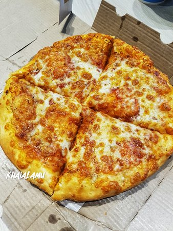

Pizza

Description
This is an easy recipe to make pizza
Ingredients
- Cheese
- Tomato Sauce
- Pizza Dough
- Parsley
Steps
- Roll out pizza dough with roller
- Add tomato sauce with spoon
- Sprinkle cheese evenly
- Put uncooked pizza in oven for 10 mins
- Take out pizza and top with parsley
- Enjoy!